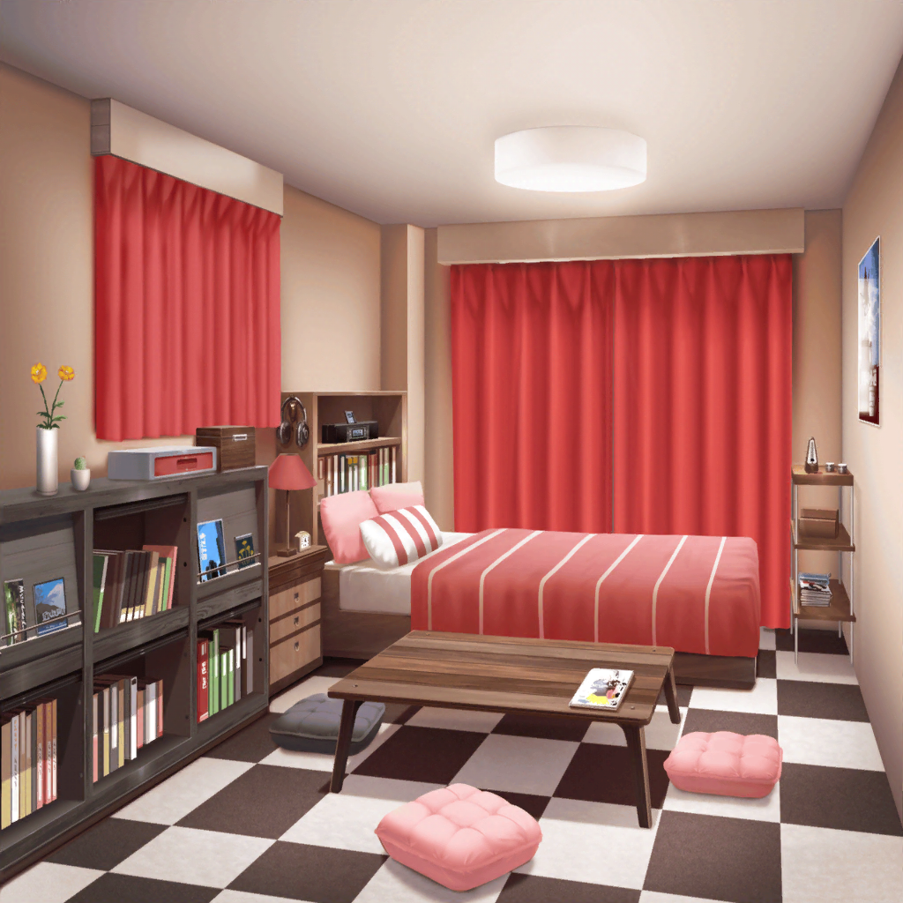
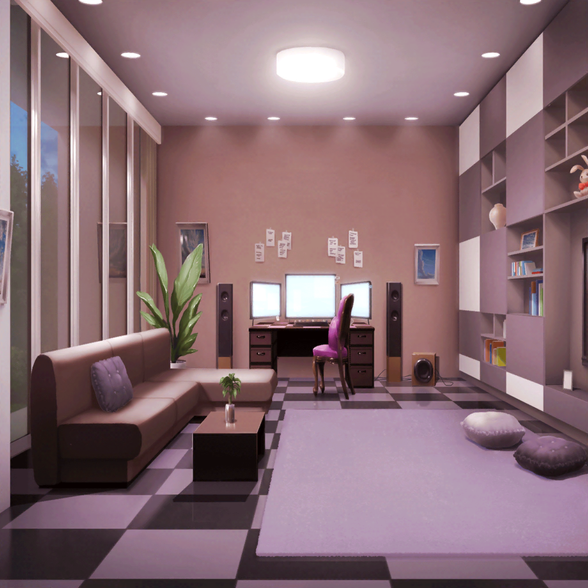

宇田川家 巴の部屋
巴
すー……すー……すー……

リビング
あこ
よかった……
おねーちゃん、ぐっすり寝てるっ。
これなら早くよくなりそう
あこ
ん？ 誰か来た……？
えっと、インターホン、インターホンっと……
あこ
あれ！？
沙綾
こんばんは
はぐみ
じゃーん、はぐみだよ！
つぐみ
突然、押しかけちゃってごめんね
あこ
みんな、どうしたの？
沙綾
ほら、さっき差し入れ持ってくって言ったでしょ？
それを持ってこようと思ったら、
途中でふたりと会って、一緒に来たんだ
はぐみ
びっくりしたよ～。
トモちんが風邪引いて倒れたって聞いて！
つぐみ
巴ちゃんには来ちゃダメだって言われてたんだけど、
やっぱり心配で来ちゃった
あこ
みんな……ありがとう！
おねーちゃんが知ったら、きっと喜ぶよ！
はぐみ
ねえねえ、あこちん。何かはぐみに手伝えることある？
看病ひとりだと大変でしょ？
あこ
ううん、大丈夫！
あこ、ひとりでへーきだよ！
今もおねーちゃん、ぐっすり眠ってるし
沙綾
あ、巴、寝てるんだ。そっか……
それじゃあ、起こしちゃったら悪いから、これで帰るね。
はい、これ差し入れだから、巴にあげてくれる？
あこ
わ～、ありがとう！
沙綾
持ってきたのは、約束通り風邪でも食べやすそうなパンだよ
沙綾
これはフレンチトースト、
ふわふわで食欲がなくても食べられるやつ
沙綾
それで、こっちは白パン。
もっちりしてて、サンドイッチみたいに何か挟んでもいいかも
あこ
わわっ♪ 美味しそーっ！
つぐみ
私は、体が温まるように、しょうが紅茶を持ってきたよ
あこ
しょうが……紅茶？
つぐみ
これが、本当においしくて体が温まるから、
絶対に風邪なんてすぐ治っちゃうと思う
あこ
ホント！？
ありがとう、つぐちん！
つぐみ
あ、あと……早く一緒に練習したいって……
巴ちゃんに伝えといて？
あこ
うん！
はぐみ
次ははぐみの番だね！
はぐみが持ってきたのは……
はぐみ
じゃ～んっ！ 鶏団子ぉ～！
あこ
すごーい！ こんなにいっぱいいいのっ？
はぐみ
もっちろん♪
スープにしたら栄養満点だよ！
はぐみ
あとは、これ！
うちのお店の特製、ホクホクコロッケー！
あこ
やったーっ！ あこもコロッケ大好き～っ！
はぐみ
もし、トモちんが食欲なかったら、あこちん、食べてね！
あこ
（こんなにたくさんもらっちゃった……）
あこ
（おねーちゃんのお友達は、みんな、優しいなぁ）
沙綾
それじゃあ、私達は帰るね
つぐみ
巴ちゃんにもよろしく伝えといて
はぐみ
じゃあ、あこちん！ トモちんのことをよろしく頼んだよっ！
ばいば～い！
あこ
みんな、来てくれてありがとね！
ばいばーい！
あこ
こんなに応援されちゃったんだもんね……
あこ、がんばっちゃう！